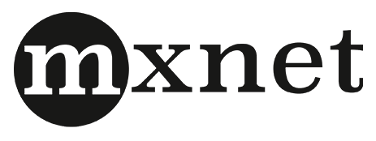
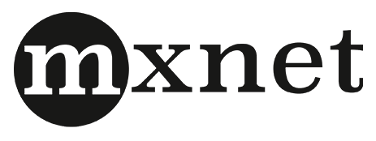

Accelerate GPU-based workflows on Amazon Web Services
Spend less time compiling, installing, and configuring Machine Intelligence tools. The Validus Deep Learning Amazon Machine Image (AMI) is pre-packaged with popular machine learning frameworks:


 



The Deep Learning AMI is available on the AWS Marketplace: {{ site.aws_marketplace_url }}
Latest versions of pip packages of popular deep learning frameworks come pre-installed. Also included:
The Validus Github page demonstrates examples of executing various Machine Learning on the Deep Learning AMI
https://github.com/validusio/deep-learning